Generated from existing compile/runtime artifacts only.
Artifact-status overview showing which paper figures are generated and which require real board-runtime measurements.
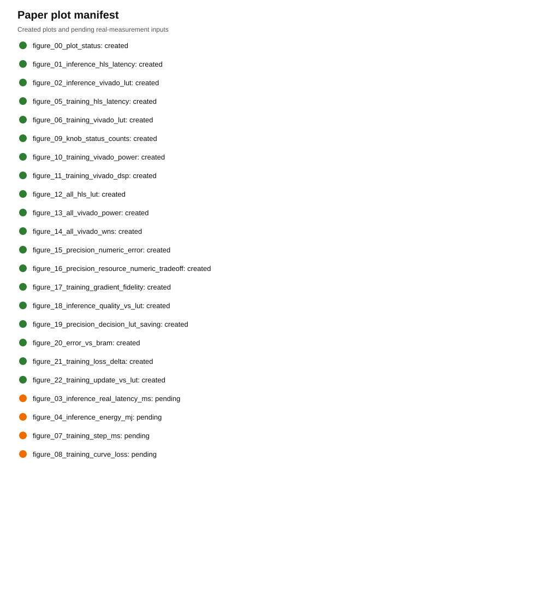
Inference HLS latency across the frozen inference subset, generated from Vitis HLS synthesis reports.
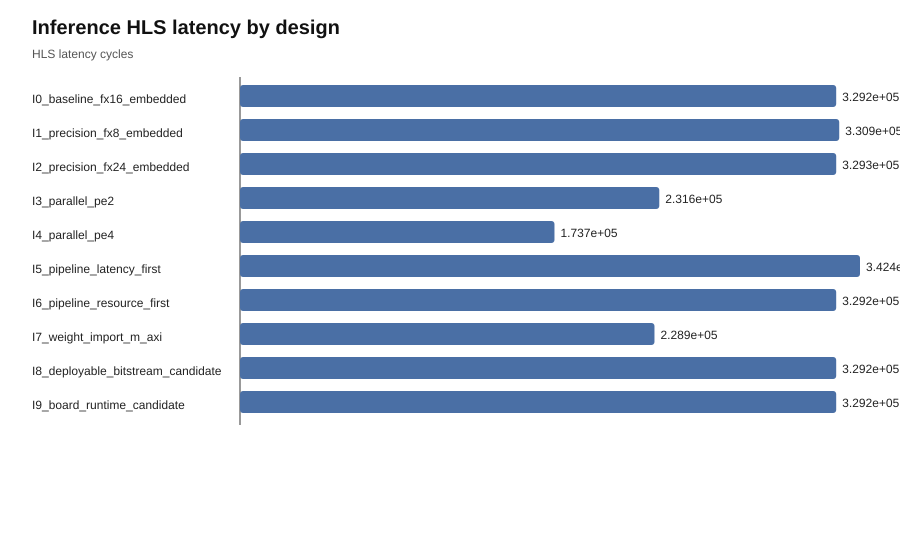
Implemented inference LUT usage across the frozen inference subset, generated from Vivado implementation reports.
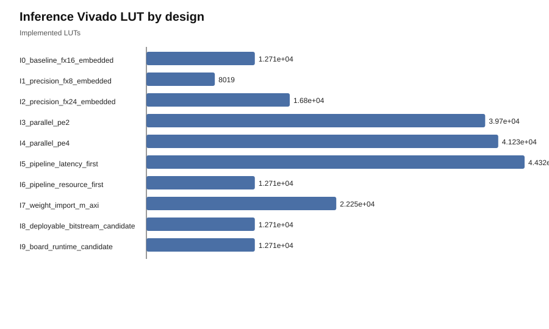
Training HLS latency across the frozen training subset, generated from Vitis HLS synthesis reports.
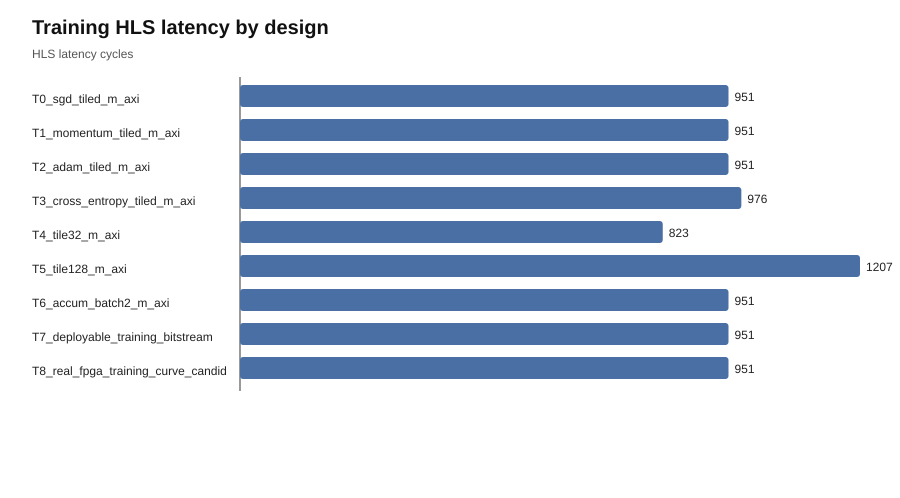
Implemented training LUT usage across the frozen training subset, generated from Vivado implementation reports.
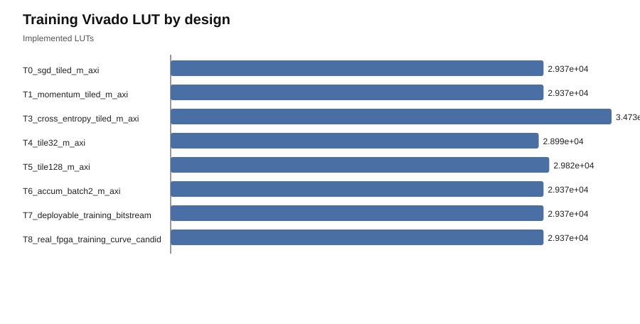
Coverage of YAML/hardware knob application status across generated hardware knob contracts.
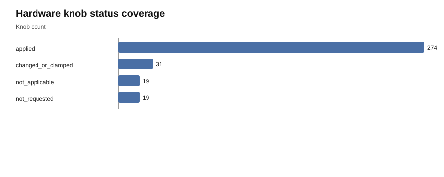
Implemented training design power reported by Vivado for the frozen training subset.
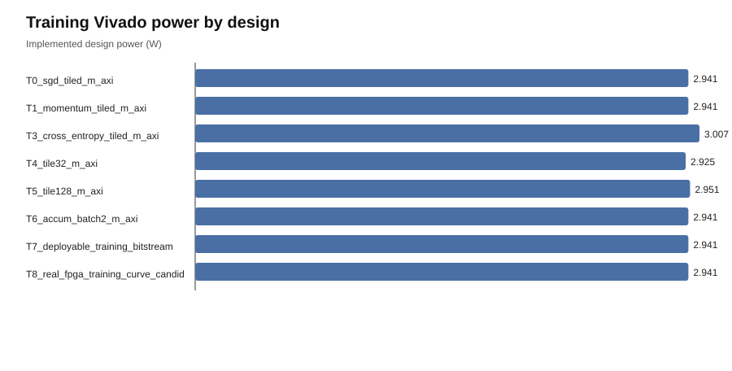
Implemented training DSP usage reported by Vivado for the frozen training subset.
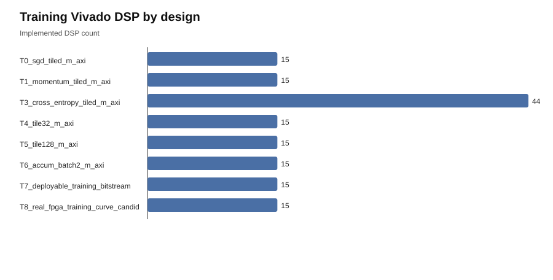
HLS LUT comparison across all frozen paper designs with HLS reports.
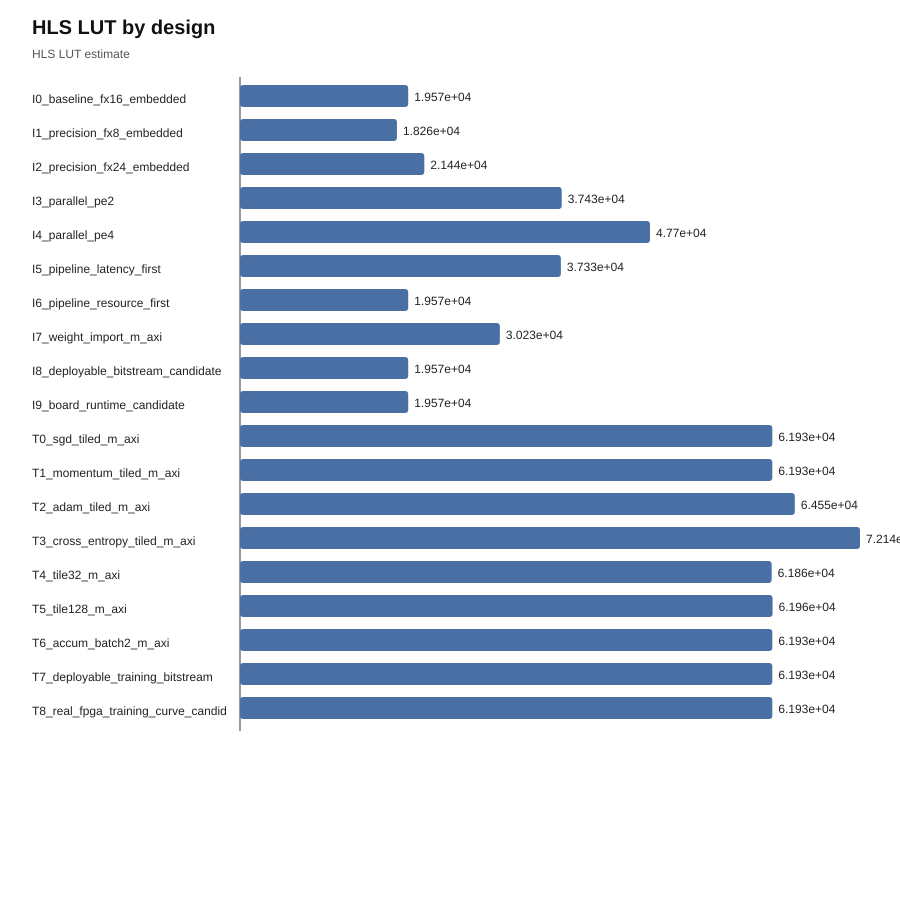
Vivado power comparison across all frozen paper designs with implementation reports.
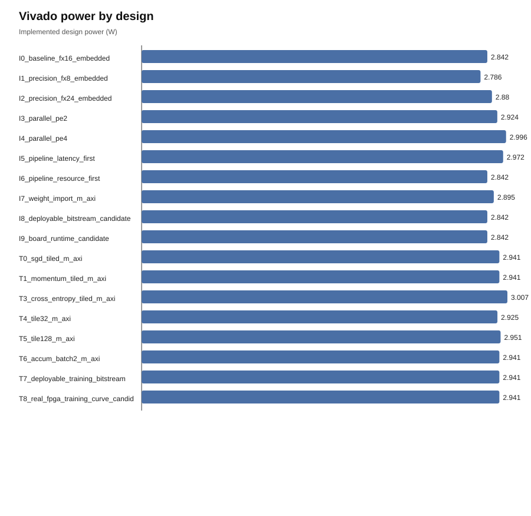
Vivado timing slack comparison across all frozen paper designs with implementation reports.
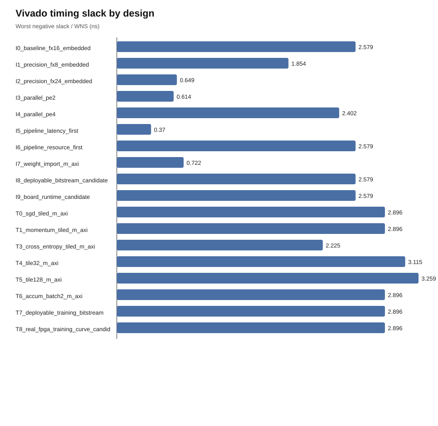
Inference precision numeric error against the Python/ONNX reference for precision-focused rows, generated only when reference-output comparison artifacts are available.
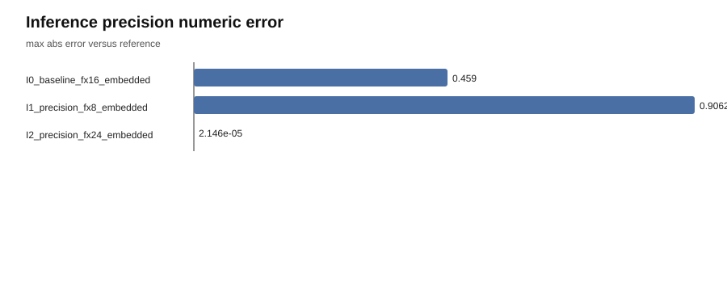
Precision tradeoff between reference-output error and implemented LUT cost, generated from numeric-validation and Vivado artifacts.
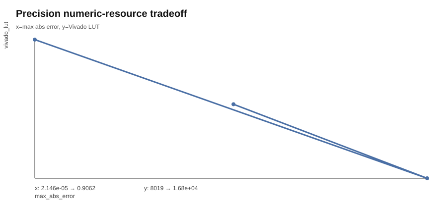
Training gradient fidelity against the Python reference across on-device-training rows, generated from numeric-validation artifacts.
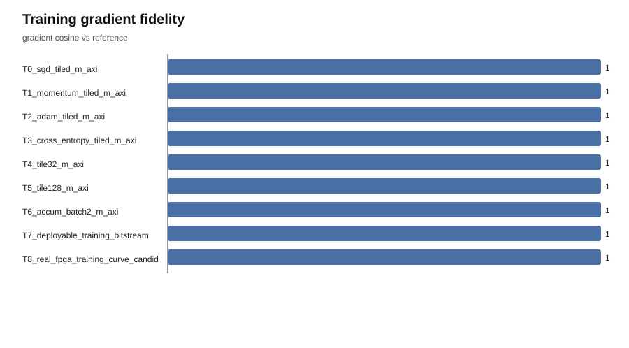
Inference task-quality/resource decision plot. When labels are available, quality can be task accuracy; otherwise it uses generated-vs-reference prediction agreement.
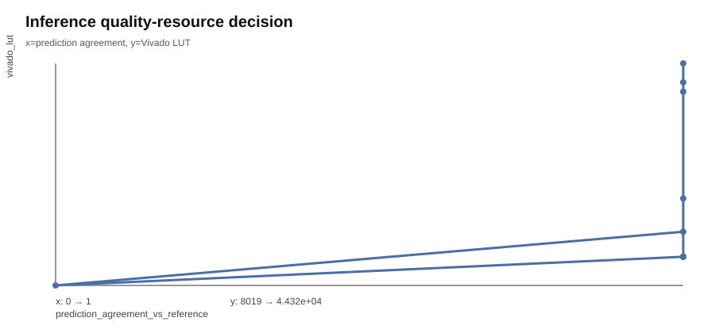
Precision decision plot showing implemented LUT saving versus the fx16 baseline for precision-focused rows.
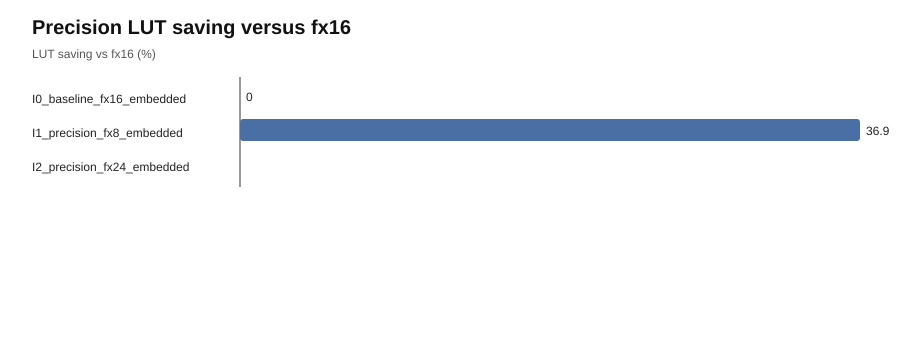
Precision decision plot showing output error versus implemented BRAM usage.
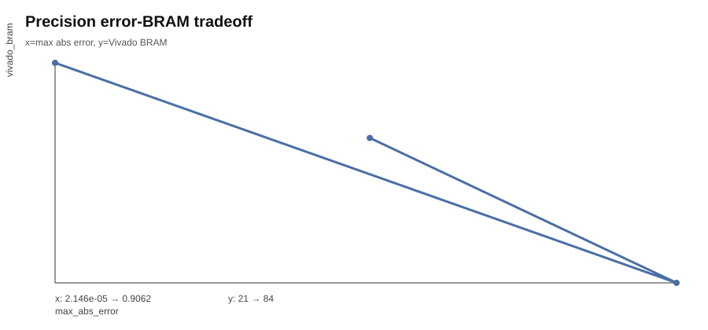
Training decision plot showing loss change over the available reference/testbench training step artifacts.
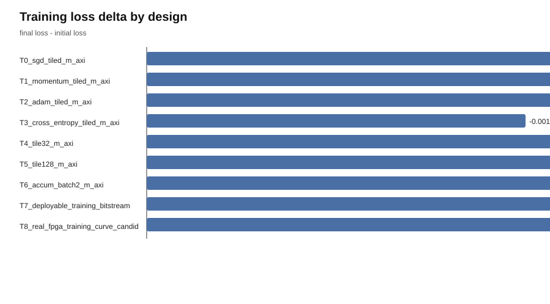
Training decision plot showing update-direction fidelity against implemented LUT cost.
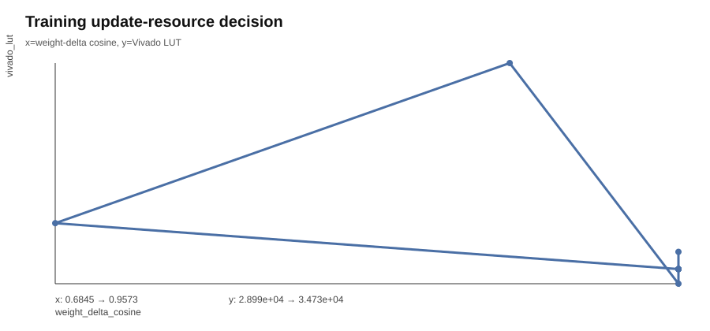